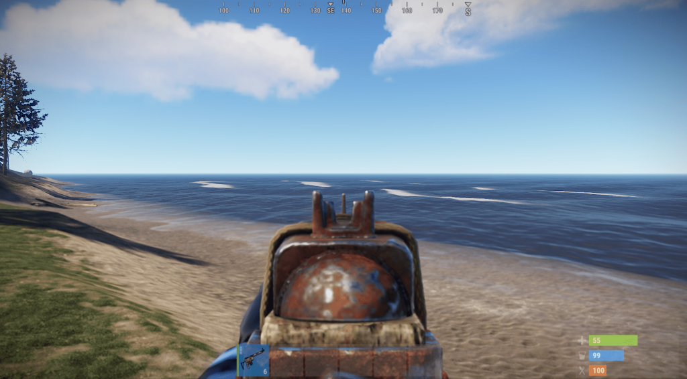
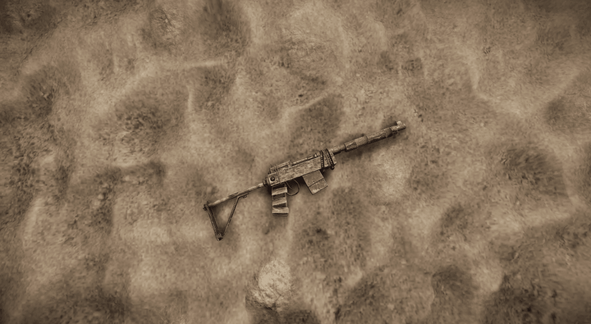
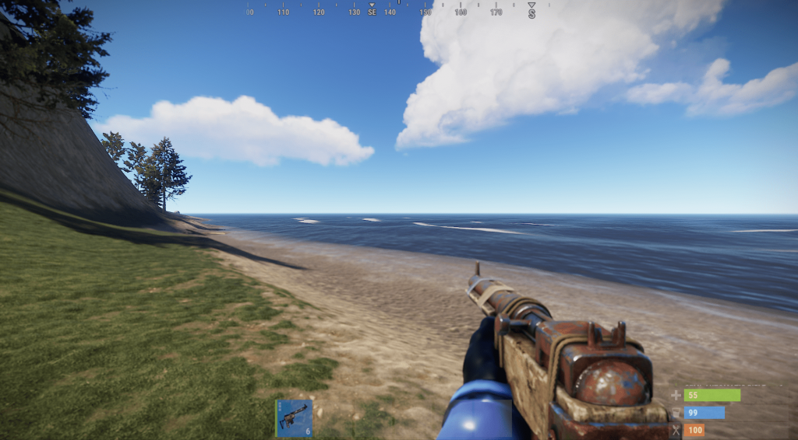
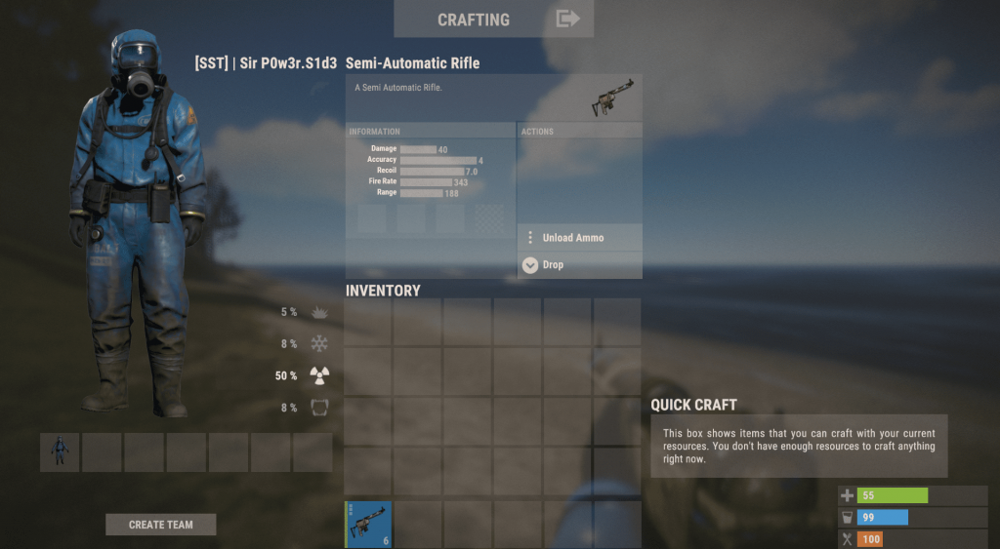

M249 в игре Rust
Создатель Rob Smith
Posted on May 15, 2023 at 12:00 PM
В Rust присутствует огромное количество различного вооружения на любой вкус и цвет. Есть пистолеты, пистолеты-пулемёты, автоматы, полуавтоматы, гранатомёт, ракетница, огнемёт, снайперские винтовки. В общем, любой игрок со стопроцентной вероятностью подберёт себе оружие по навыкам стрельбы и стилю игры. Существуют игроки-штурмовики, которые любят, нет, просто обожают находиться в самом пекле боя, когда враги чуть-ли не везде. А есть игроки–снайперы – они-то предпочитают держаться на дистанции. Хотя бывают и «Два в одном» — им неважно, где и как воевать, главное отстрелить пару десятков вражеских игроков. Для последнего типа игроков идеально подходит класс оружия – полуавтоматические винтовки, представителями которых являются винтовки M39 и полуавтоматическая винтовка, более известная в широких кругах под названием «Берданка». А коли уж у нас на сайте уже есть разбор винтовки M39, с которым я вам настоятельно рекомендую ознакомиться, то сегодня будем разбирать всеми любимую «Берданку».
Полуавтоматическая винтовка «Берданка» — представитель класса оружия «Полуавтоматы». Берданка идеально подходит для перестрелок на средних дистанциях. При должной сноровке её можно применять также на ближних и дальних дистанциях. В последнем случае ей обязательно понадобится 8-микратный оптический прицел. Если таковой вам не по душе, вы без проблем можете заменить его на любой другой прицел, благо данная винтовка абсолютно лояльно относится ко всем типам модификаторов. Стандартная комплектация подойдёт не всем. Лично мне довольно проблематично стрелять со стандартного прицела винтовки.
Поддерживаемые патроны – 5,56-мм любого типа. Я же настоятельно рекомендую использовать в бою либо обычные, либо скоростные патроны. Разрывные чаще всего используют при рейдах, а взрывают все и вся при помощи берданки, так как она не такая дорогая в плане крафта. Зажигательными патронами же можно «Сжигать» автоматические турели, а также установки ПВО.
Урон в 40 единиц делает её неплохим оружием для тех, кто не развился до более мощного оружия. Вместимость магазина и перезарядка в 4.4 секунды позволяет винтовке достигнуть скорострельности в 343 выстрела в минуту. Урон в секунду – 91. Из модификаторов могу порекомендовать только оптический прицел 8X при перестрелке на дальних дистанциях и лазерный целеуказатель (ЛЦУ). Также можно напялить на персонажа модные тактические перчатки, чтобы полностью избавиться от раскачки оружия.
Берданку может скрафтить любой игрок, который перед этим изучил чертёж винтовки. Так что первым делом отправляемся на долгие поиски винтовки, чтобы потом использовать её для изучения. Поиски и изучение Полуавтоматическая винтовка находится в следующих контейнерах: Заблокированный ящик – 3%; Элитный ящик – 1%; Военный ящик – 1%; Учёный с нефтяной вышки – 0.2%; Бронированный учёный – 0.1%. После успешных поисков направляемся на базу, где установлен стол для изучений. Стоимость изучения винтовки «Берданка» — 125 единиц металлолома. Крафт и ремонт Стоимость крафта – 1 корпус полуавтомата, 1 металлическая пружина, 450 фрагментов металла, 4 единицы металла высокого качества. Крафт требует наличия верстака второго или третьего уровня. Время крафта на верстаке второго уровня – 30 секунд, а на третьем – 15. Каждый ремонт забирает 20% от максимальной прочности винтовки. Максимальная цена ремонта – 90 фрагментов металла + 2 единицы металла высокого качества.
